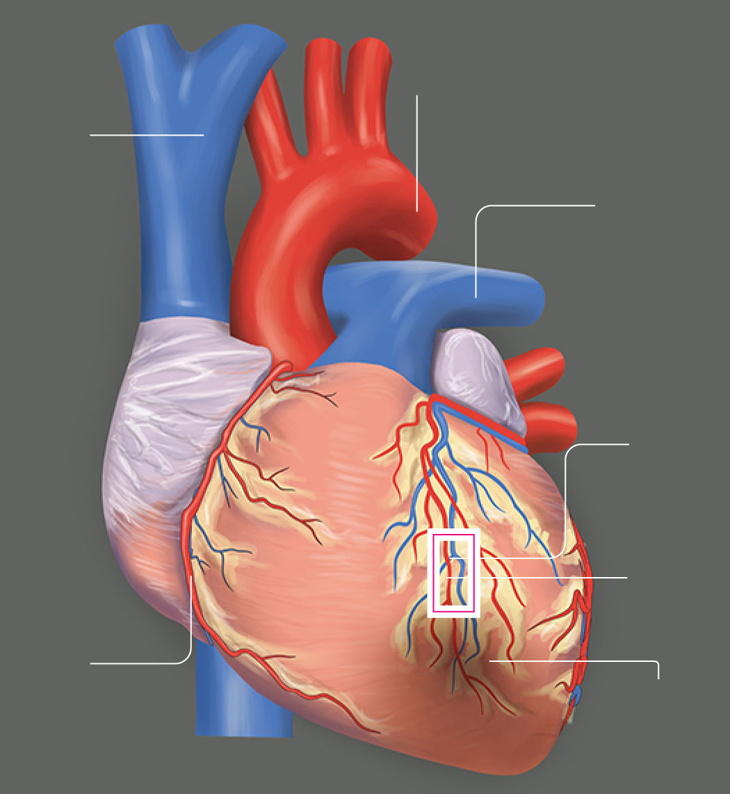
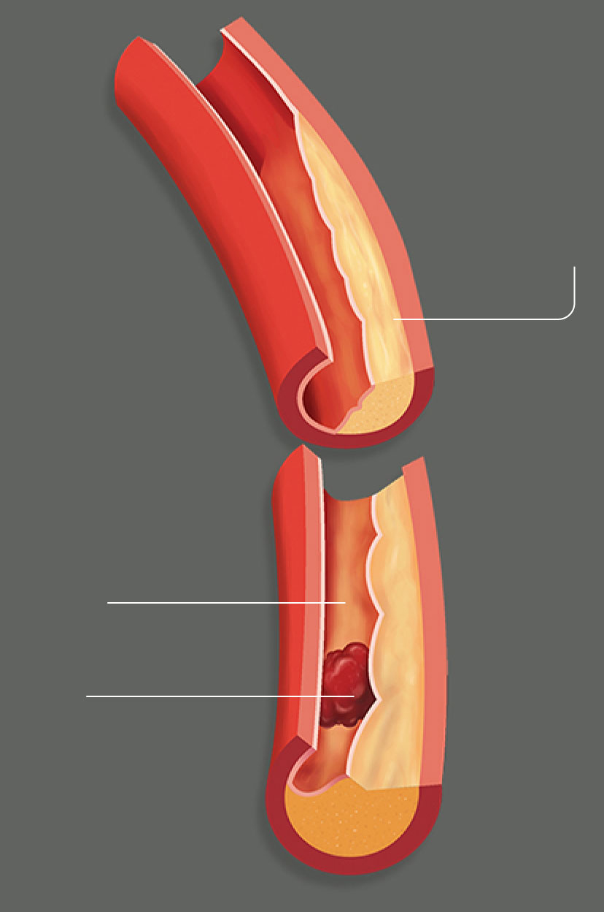
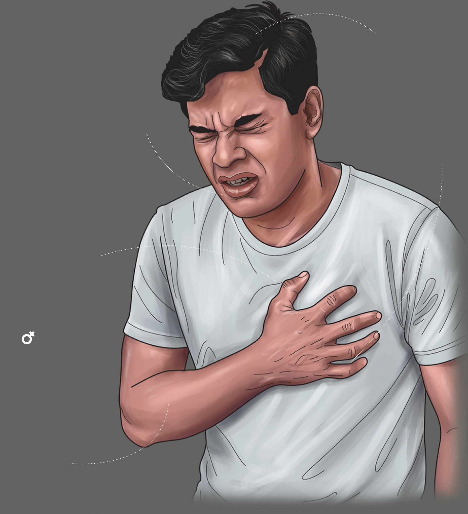
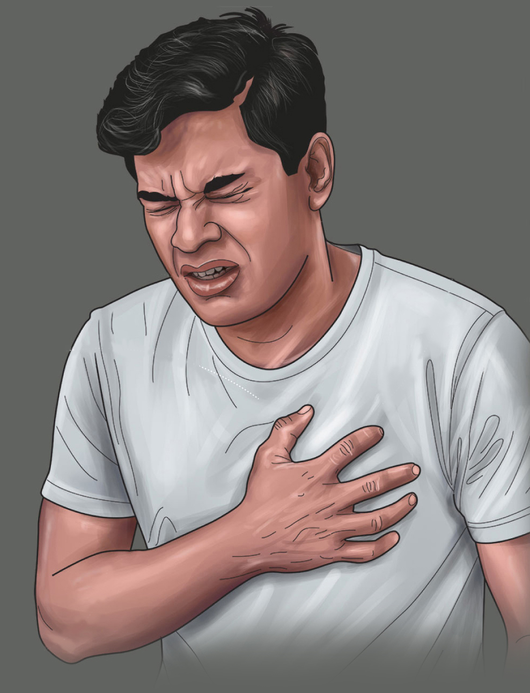
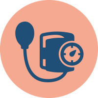
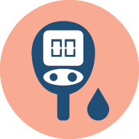
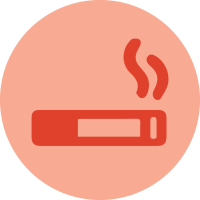
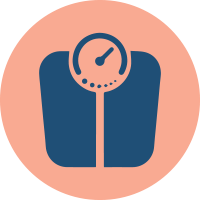
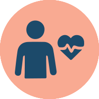
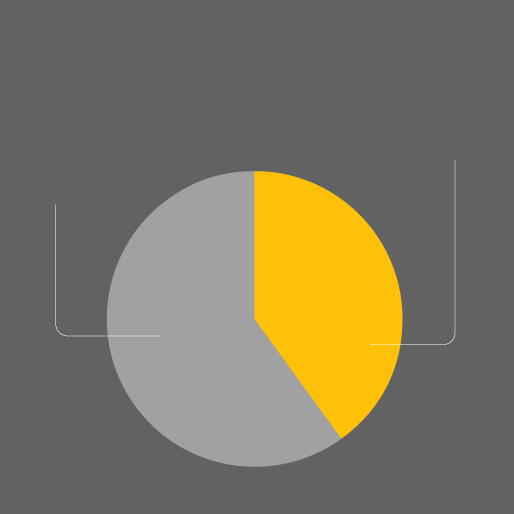

Call Ambulance Service (1990)
Seek admission to the nearest suitable hospital right away.
Scroll to Begin
Cardiovascular diseases (CVD)
are conditions that affect
1. the heart
2. the blood vessels

Cerebrovascular diseases
4,962
Ischaemic heart disease
15,761
Other heart diseases
7,974
Hypertensive diseases
4,266
Hypertensive diseases: Problems from high blood pressure, e.g., heart failure, stroke risk.
Ischaemic heart disease: Narrowed arteries reduce blood to the heart, causing angina or heart attack.
Other heart diseases: Includes cardiomyopathy, arrhythmias, congenital defects, and inflammation.
Cerebrovascular diseases: Blood vessel disorders in the brain, mainly stroke and TIAs (Transient Ischemic Attacks).
The human heart, about the size of a fist, is the body’s strongest muscle. It begins beating just three weeks after conception and, by age 70, will have beaten 2.5 billion times. Through 97,000 km of blood vessels, it pumps blood to deliver oxygen and nutrients while removing waste.

Aorta
Superior
vena cava
Left main
coronary artery
Site of
blockage
Blood
supply
blocked
Right
coronary artery
Dead heart muscle tissue
When the coronary arteries (heart arteries) that supply blood to the heart muscle become narrowed or blocked by fatty deposits called plaques, blood flow and oxygen to the heart are reduced. This can cause chest pain, known as angina.

coronary artery
Plaques
Narrowed
artery
Blood clot
If a coronary artery becomes completely blocked — often by a blood clot forming on a ruptured plaque — the part of the heart muscle supplied by that artery is starved of oxygen and nutrients. Within about 30 minutes, heart muscle cells begin to die. Most damage occurs within 6–12 hours.
Pain or discomfort spreading to the shoulders, arms (especially the left arm), back, neck, jaw, or upper abdomen.


Lightheadedness, dizziness, or fainting
Nausea or vomiting
Shortness of breath — with or without chest pain
Chest pain, pressure, tightness, or discomfort — often lasting more than a few minutes, or coming and going
Fatigue or unusual tiredness, especially in women
Cold sweating


Age: The risk of CVD rises with age as arteries naturally become stiffer and plaque can build up over time.
Sex: Men generally face a higher risk of heart attack earlier in life, though the risk for women increases after menopause.
Family history (Genetics): Having a parent or sibling with CVD increases one’s own risk, particularly at younger ages.

High blood pressure: Increases strain on the heart and arteries, raising the risk of heart attack and stroke.
High cholesterol: Promotes plaque buildup in arteries, reducing blood flow to the heart and brain.

Diabetes: High blood sugar damages blood vessels and accelerates plaque buildup.

Smoking: Damages the lining of arteries, increases blood pressure, and reduces oxygen in the blood.

Physical inactivity: Lack of regular exercise contributes to obesity, high blood pressure, and poor cholesterol balance.

Unhealthy diet: Diets high in salt, saturated fats, and sugar raise cholesterol and blood pressure.

Obesity: Increases blood pressure, cholesterol, and risk of diabetes — all of which heighten CVD risk.
Excessive alcohol consumption: Raises blood pressure and triglyceride levels, damaging the heart muscle.

Stress: Chronic stress can lead to inflammation, high blood pressure, and unhealthy coping behaviours.

Poor sleep: Inadequate or poor-quality sleep can raise blood pressure and contribute to obesity and diabetes.
Air pollution: Long-term exposure to air pollutants can damage blood vessels and increase the risk of heart disease.
Chronic inflammation: Persistent inflammation in the body contributes to the development of atherosclerosis.
Socioeconomic factors: Low income, limited access to healthcare, and social stress increase vulnerability to CVD.
Call Ambulance Service (1990)
Seek admission to the nearest suitable hospital right away.

Give Aspirin (if safe)
If the patient is conscious and not allergic, let them chew one aspirin to help reduce blood clotting.
Keep Patient Still
Sit them down, keep them calm. Loosen any tight clothing. Do not let them walk.

Check Breathing & Pulse
If they stop breathing, start CPR immediately.

Reassure the Patient
Stay calm and speak gently — don’t frighten them.
“According to cardiologists, about 40% of patients die at the very onset of a heart attack. Only around 60% survive long enough to reach a hospital for admission and treatment.”

Survive to hospital admission:
60%
Sudden cardiac death:
40%
Sources: World Health Organisation (WHO), Mayo Clinic, Sri Lanka Heart Association, Department of Census and Statistics